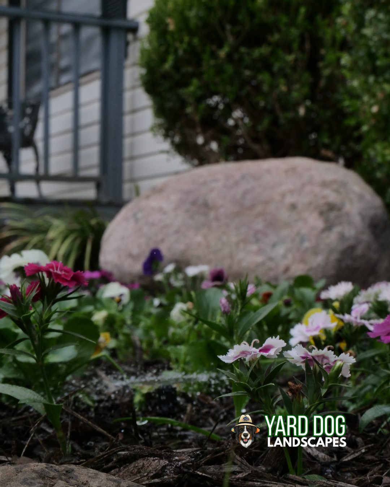
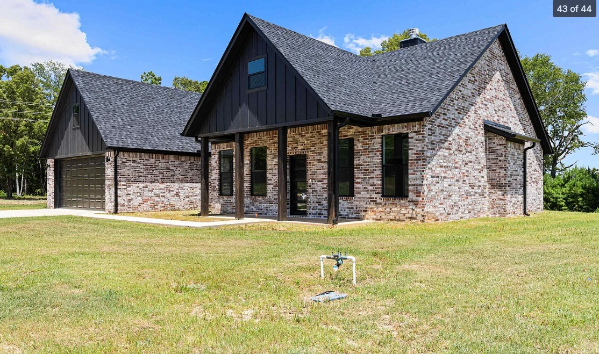
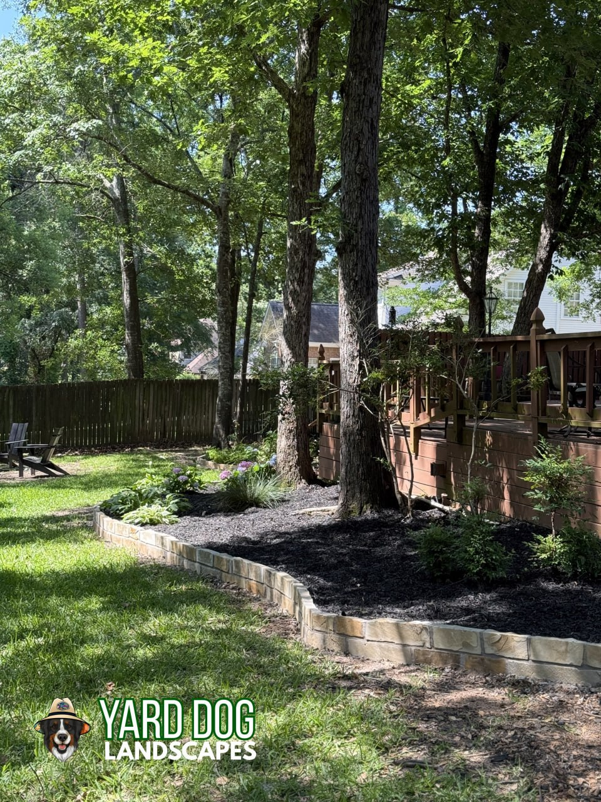

Mulch Installation in Kilgore, TX
Professional mulch installation serving Kilgore and surrounding East Texas communities.
Get a Free Quote in KilgoreTrusted Mulch Installation Company Serving Kilgore, TX
Yard Dog Landscapes is the mulch installation Kilgore TX homeowners trust to show up, do the work right, and treat the property like our own. We've been working yards across Gregg County since 2017, and Kilgore sits in our regular service area alongside Longview and White Oak. When you call us for mulch installation Kilgore Texas, you get a local crew, a written estimate, and the same standards on every visit.
Kilgore wears its history out loud, from the oil derricks downtown on the World's Richest Acre to the Rangerettes at Kilgore College, and it sits right on the Gregg and Rusk county line. On Kilgore's fast-draining sandy beds, a fresh even mulch layer is what holds water around the roots through summer and keeps weeds out of the open ground between plants. The soils here lean sandy and piney, and our mulch installation is tuned to that fast-draining East Texas ground rather than a generic script.
From routine mulch installation to bigger seasonal projects, our crew handles Kilgore properties of every size. We also serve nearby Longview, White Oak, and Henderson, plus the rest of Gregg County. Call (903) 844-6877 or request a free quote online — we walk every property in person before we send a price.
What's Included With Mulch Installation in Kilgore
Mulch Installation we've done around East Texas.



Real mulch installation, before and after.


Why Kilgore Homeowners Choose Yard Dog Landscapes
Local crew, local knowledge
Familiar with East Texas soil, grass, and climate — because we work it every day.
Free on-site quotes within 24 hours
We walk the property in person and send a written, itemized estimate fast.
Licensed, insured, family-owned since 2017
Same crew, same standards, every visit. Fully licensed and insured.
What East Texas homeowners say about Yard Dog.
Fantastic service, team has taken great care of our lawn. Always on time and respectful of the land. These guys go the extra mile.
Does a great job. Shows up on time. Prices are good. Very friendly. I highly recommend this service.
Miller did a wonderful job! He was quick and thorough, I would recommend Yard Dog highly!
Frequently Asked Questions
Do you offer mulch installation in Kilgore, TX?
Yes. Yard Dog Landscapes is a family-owned company that's been serving Kilgore and the rest of Gregg County since 2017, and mulch installation is one of our core services. Whether you want a one-time job or recurring work tied to the season, we'll write up a clear, itemized estimate and stick to it.
How often should I schedule mulch installation in Kilgore?
Most beds get a fresh mulch layer once a year in spring, with some homeowners adding a lighter fall top-off to keep beds looking sharp year-round. Every Kilgore property is a little different, so we'll walk yours and recommend a schedule that fits how the yard actually grows.
What areas near Kilgore do you serve?
Yard Dog Landscapes serves Kilgore, plus nearby Longview, White Oak, Henderson, and surrounding Gregg County communities. If you're not sure whether you're in our service area, give us a call at (903) 844-6877 — we cover most of East Texas.
Are you local to Kilgore, TX?
Yes. We work Kilgore regularly, from the neighborhoods around Kilgore College to homes all over town. Yard Dog is family-owned, fully insured, and holds a 5.0 rating across more than 110 Google reviews from East Texas homeowners.